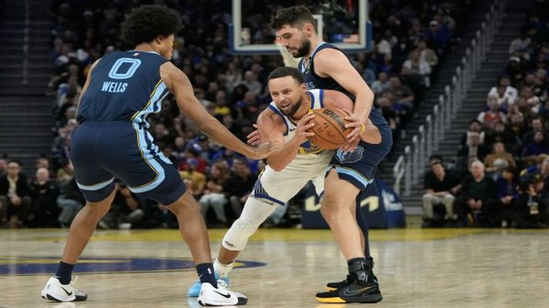

NBAGrizzliesSeason ranks
Season ranks as of tip-off, Grizzlies at Kings (Sun)
Points
T-8th
119.0 a game
Points allowed
7th
107.7 a game
Rebounds
T-2nd
52.0 a game
3-point %
7th
38.1%
Blocks
T-6th
6.7 a game
Assists
T-18th
24.7 a game
Field goal %
16th
46.0%
Steals
25th
7.0 a game
Turnovers
T-19th
16.7 a game
News2 stories hidden by the shield

NBA breakout players: 30 ready for the next step (yes, even Wemby and Luka)Story · 6 h ago
A Grizzlies story · hidden by the shield18 h ago
A Kings story · hidden by the shield19 h ago

Warriors implode late as Grizzlies' 17-0 run caps stunning comebackNews · Yesterday
Roster18 playerssorted by jersey
#PLAYERGPMINPTSREBASTFG%3P%
0Jaylen WellsF328.34.72.0